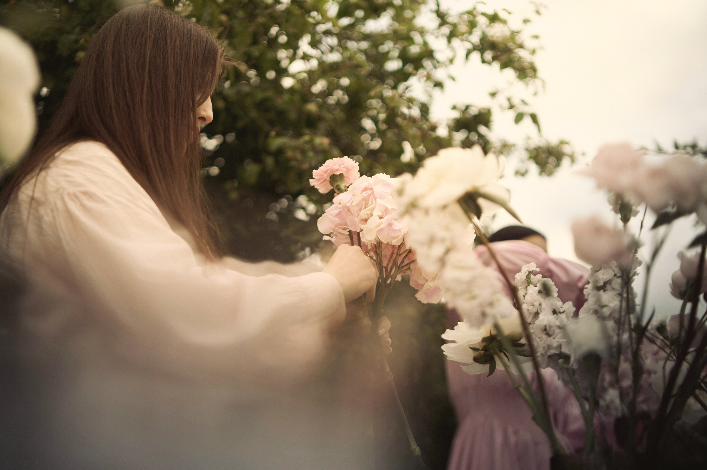
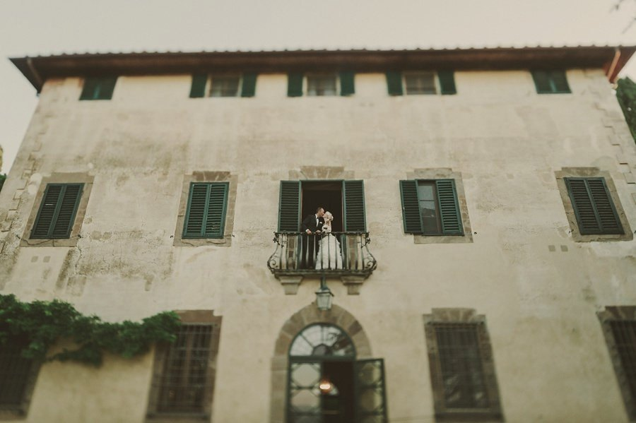
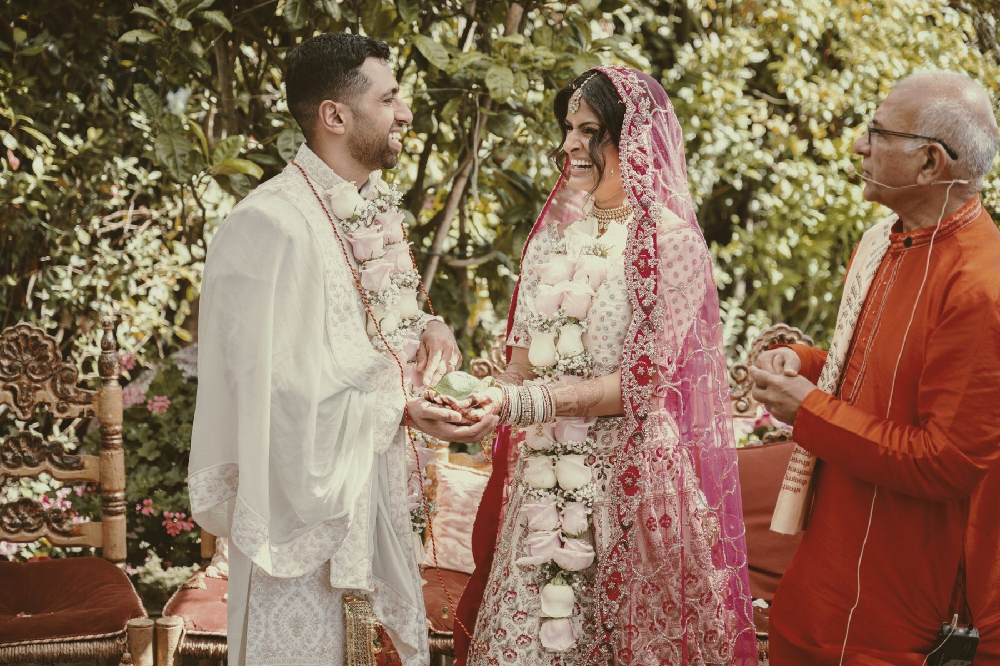

Vows in the
late light.
We plan the ceremony, the dinner and the weekend around them.
Plan your wedding
The care in small things
Details we see to on the day.


Your ceremony
Married in a frescoed villa hall.
We certainly gave them a challenge with the documentation side…
— Kevin & Olga



One day, or three
A weekend for guests who travel far.

Friday, drinks above the sea.
Saturday, the wedding.


Sunday, the slow morning.

Real weddings
Plan your weddingMore than anything, the IEP team feels like family to us.
— Christina & David